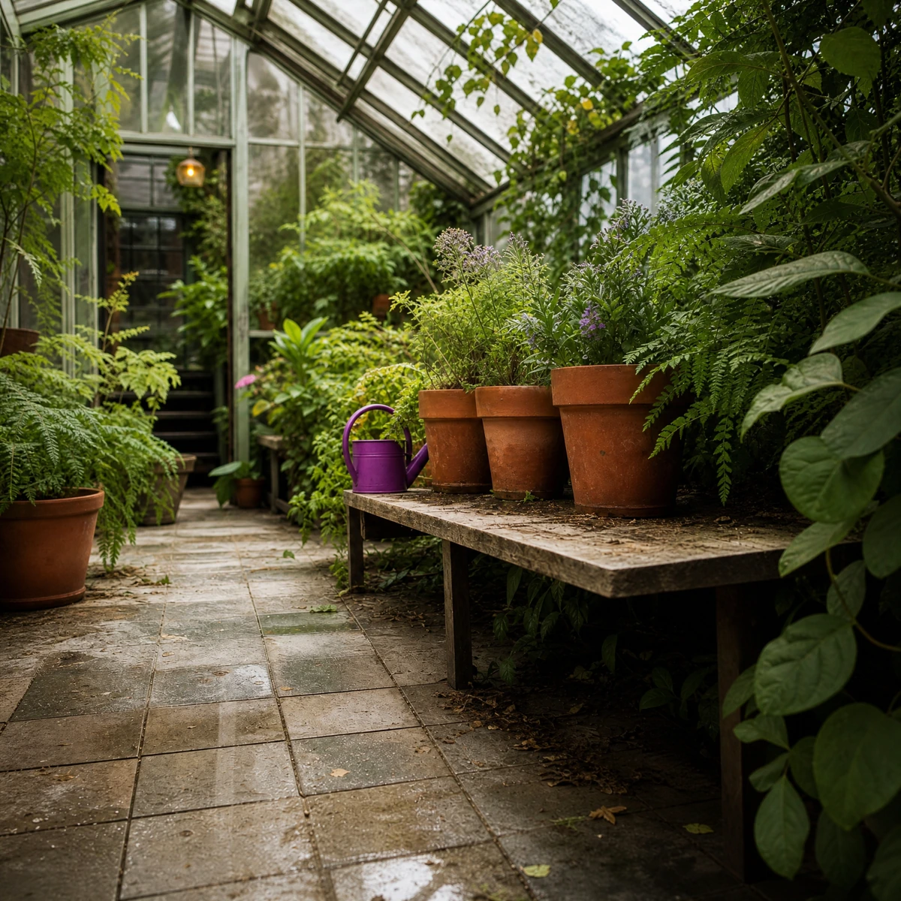
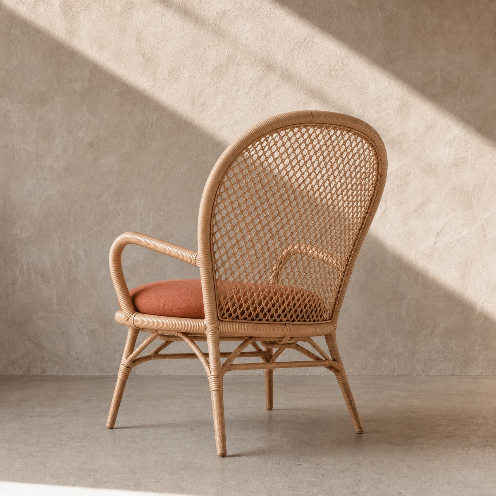
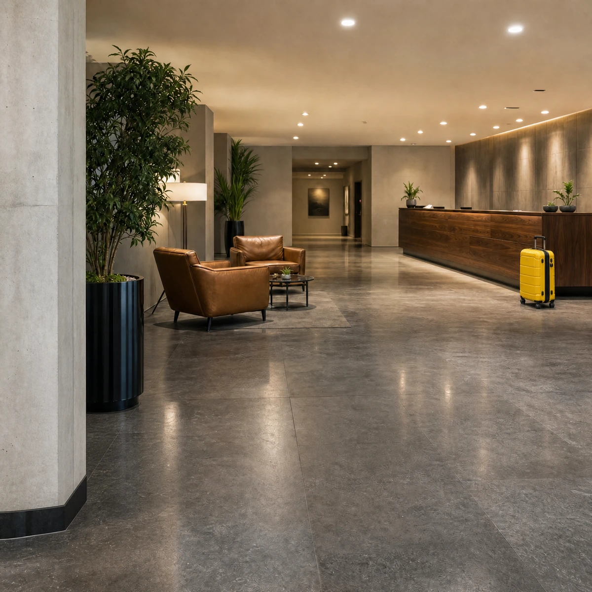
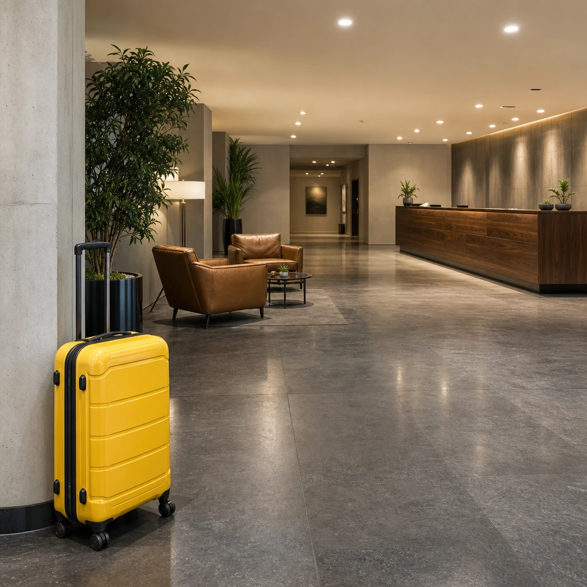
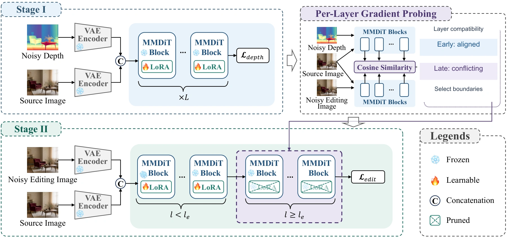
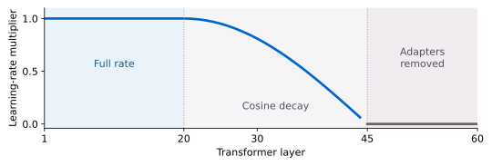

Adapt to depth
Train a LoRA depth-denoising adapter while keeping the diffusion backbone frozen.
NEURIPS 2026
Stitching Depth Priors into Image Editors
via Per-Layer Gradient Probing
The Hong Kong University of Science and Technology
† Corresponding author


THE IDEA
Move an object closer and its apparent size changes. Put it behind a chair and the occlusion order changes. StitchEdit adapts a diffusion model’s depth capability to help make these relationships part of the edit.
We first train a lightweight depth adapter, then probe how the depth and editing objectives interact at each transformer layer. The resulting profile guides where to train the adapter and where to remove it. Editing still takes just a source image and a text instruction.
LOOK CLOSER
Drag the divider to compare the recorded input and output. These are selected qualitative examples.


HOW IT WORKS
Train a LoRA depth-denoising adapter while keeping the diffusion backbone frozen.
Measure the alignment between editing and depth gradients to identify compatible and conflicting regions.
Train early adapters, taper the learning rate through the transition, and remove late adapters.

Early compatible layers use the full learning rate. The transition layers receive cosine decay, and late adapters are removed. The backbone remains frozen.
Illustrated learning-rate schedule for the Qwen backbone.

EVALUATION
An unchanged source can score highly on global depth similarity. Local DCS and depth-change correlation help reveal that failure.
Author-review results · Final verification pending.
| Method | Global DCS ↑ | Local DCS ↑ | Δ-Depth corr. ↑ | Human geometry ↑ |
|---|---|---|---|---|
| Source / no-op | 0.84 | 0.40 | 0.00 | 0.0% |
| Nano-Banana | 0.73 | 0.67 | 0.59 | — |
| Qwen-Image-Edit | 0.70 | 0.62 | 0.54 | 48.0% |
| Uniform FT | 0.79 | 0.58 | 0.47 | 22.0% |
| StitchEdit | 0.90 | 0.81 | 0.77 | 73.3% |
Local DCS compares aligned depths in the edited region.
Δ-Depth correlation compares the requested and actual depth changes; zero-variance changes score zero.
Human geometry is majority correctness for the relevant spatial category, distinct from preference and edit execution.
The evaluation covers a curated synthetic benchmark and two backbones. Estimated depth is a proxy for geometry. Transparent objects, thin structures, long occlusion chains, and large camera movements remain challenging.
ABSTRACT
Text-guided image editing with diffusion models struggles with spatial edits that depend on the three-dimensional structure of a scene. StitchEdit uses a lightweight depth-denoising adapter and per-layer gradient probing to study how depth and editing objectives interact. A probe-guided learning-rate schedule selectively fine-tunes compatible layers and removes adapters in late conflicting layers. Evaluation on StitchEditBench covers spatial transformation, occlusion manipulation, and viewpoint change, with local and change-sensitive depth measurements to distinguish edited geometry from unchanged-background agreement.
@inproceedings{guo2026stitchedit,
title={StitchEdit: Stitching Depth Priors
into Image Editors via Per-Layer
Gradient Probing},
author={Guo, Qin and Xu, Dan},
booktitle={Advances in Neural
Information Processing Systems},
year={2026},
url={https://openreview.net/forum?id=Q7G74v5nSs}
}